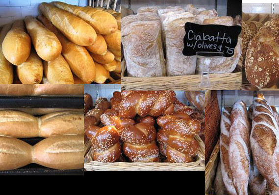
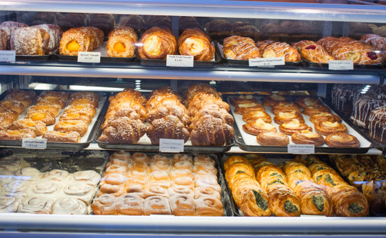
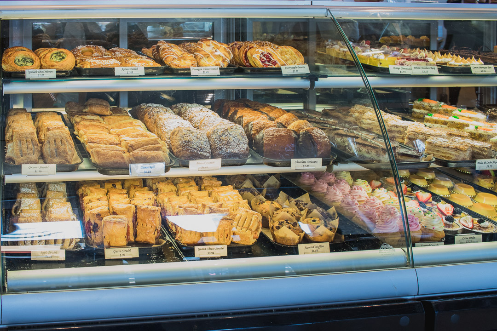

Menu
Bread
-
Cuban Roll
Bag of 6 - A classic Cuban roll! Our "Pan de Agua" is a delicate, savory bread with a soft crust. Perfect for dinner rolls or sandwiches.
$2.50
-
Egg Bread
Porto's take on a classic Challah with a rich, buttery interior and a soft, deep-golden crust topped with sesame seeds. Perfect with delicious butter or making homemade French toast and bread pudding.
$4.05
-
French Baguette
A classic baguette with a light, chewy interior and a crisp, golden crust. Perfect for toast, dipping in soups, and making homemade croutons.
$2.50
-
Country Bread
A naturally leavened rustic loaf baked with our signature Porto's starter, organic old-world wheat, locally sourced rye flour from the Tehachapi Heritage Grain Project, and sweetened with a touch of organic apple cider.
$4.25
-
Walnut Raisin Batard
A rich, slightly sweet, and nutty loaf with a crispy crust made with Porto's signature sourdough starter, rye flour, California walnuts, and raisins. Perfect with delicious butter, for building sandwiches, and making homemade French toast.
$4.15
-
Multigrain Batard
A nutty, hearty loaf with a crispy crust made with Porto's signature sourdough starter, rye flour, and filled with sesame, pumpkin, flax, and sunflower seeds. Delicious on its own or with your favorite spread.
$4.15
Savory
-
Potato Ball
A Porto's Bakery Classic! Porto's signature potato puree filled with Rosa's original picadillo (Cuban style ground beef with onion, bell pepper, olive, and Spanish seasonings) with a crispy panko crust.
$1.25
-
Chicken Croquette
Traditional croquette made with bechamel, chicken, garlic, parsley, and Spanish seasonings.
$1.25
-
Plantain Chips
Thinly sliced plantain, fried, and seasoned with garlic salt. Served with a side of Mojo (Cuban garlic sauce).
$3.55
-
Pork Tamale
A Cuban-style soft corn tamale with Porto's signature slow-roasted pork wrapped in a corn husk.
$2.95
-
Ham Croquette
Traditional croquette made with bechamel, smoked ham, parsley, and Spanish seasonings.
$1.15
-
Meat Pie
A sweet and savory guest favorite! Puff pastry filled with Rosa's original picadillo (Cuban-style ground beef with onion, bell pepper, olive, and Spanish seasonings).
$1.25
Pastry
-
Cheese Roll
A guest favorite! Traditional puff pastry made with European style butter with Porto's signature cream cheese filling, topped with sugar.
$1.05
-
Guava and Cheese Strudel
A Porto's Bakery Original! Puff pastry with Porto's signature cream cheese filling and guava jam.
$1.19
-
Cranberry Orange Scone
A traditional scone with dried cranberries, bits of candied orange peel, and a sweet cream crust.
$2.45
-
Pineapple Empanada
Porto's take on a traditional Mexican sweet empanada filled with a chunky pineapple jam.
$1.65
-
Cinnamon Coffee Cake
A staff favorite! Moist pound cake filled and topped with a cinnamon pecan streusel, drizzled with icing. Serves 8.
$9.50
-
Quesadilla
A Porto's twist on a traditional Central American pound cake made with cream cheese and sour cream. Topped with sesame seeds. Serves 6.
$4.15
Cold Sweets

-
Guava Rose
A sweet, pink guava mousse with a chunky guava center atop a thin layer of Rosa’s original sponge cake. Finished with a white chocolate glaze and topped with a dried rose bud.
$3.85
-
Fresh Fruit Tartlet
A guest favorite! A buttery tart with vanilla custard and an assortment of fresh fruit.
$4.25
-
Parisian Chocolate Cake Slice
A guest favorite! A slice of moist chocolate cake layered with Porto's signature whipped chocolate ganache and topped with dark chocolate shavings.
$3.55
-
Mango Mousse Bomb
Porto's signature mango mousse on a thin layer of Rosa's original sponge cake with passion fruit crémeux. Finished with mango glaze, finely shredded coconut, and white chocolate décor.
$3.85
-
Napoleon Slice
Traditional puff pastry made with European-style butter, layered with vanilla custard. Finished with puff pastry crumbs, and powdered sugar.
$3.80
-
Tiramisu Cup
Layers of mascarpone cream and coffee-soaked ladyfingers. Topped with cocoa powder and crispy dark chocolate pearls.
$3.60